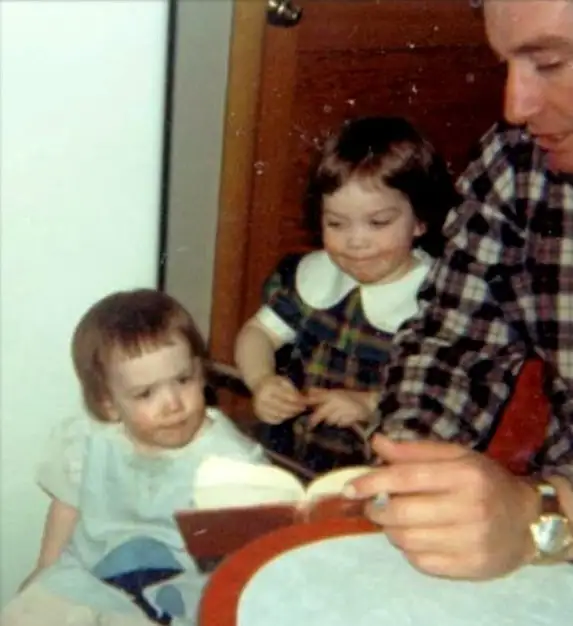
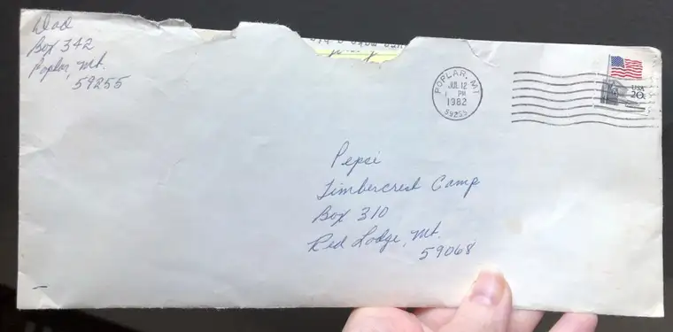
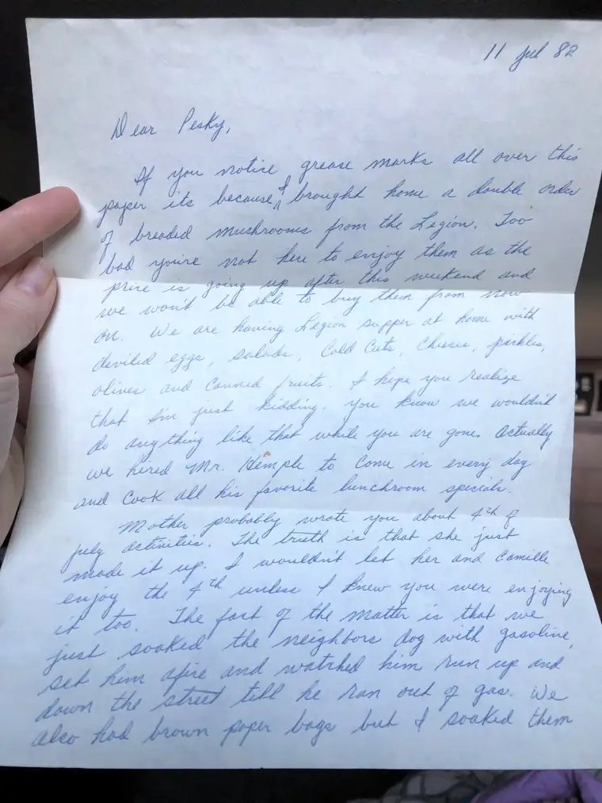
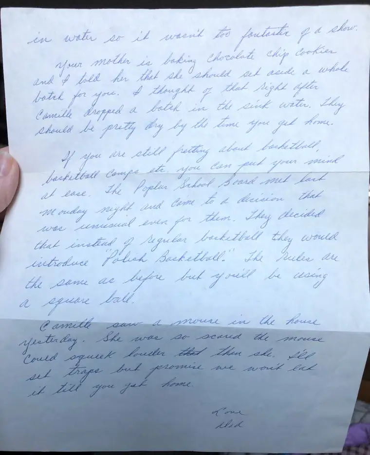

The weather predictions were against those of us preparing to present at a Young Author Conference in Thief River Falls, Minn., this Thursday, and yet, we remained hopeful.
Then this morning — 24 hours earlier than anticipated — an email message reached us with the dreaded update: “Cancelled due to weather.” There’s such a strangeness about it all, for on this day, a day before intended departure, I look out my window to bright sunlight against an aqua-blue sky, and, judging by the tree branches, air still and silent.
This would have been my 12th year presenting at this event with other authors, illustrators, poets and playwrights. The amount of planning to get us all committed and there, plus rounding up many busloads of students from the area, is hard to fathom. Not to mention that I’ve never had as much fun preparing for this presentation — which now will not happen — as this year.
Each year brings a different theme. My presentation this go-around was patterned after my newest children’s book, “The Twelve Days of Christmas in North Dakota.” I’d titled it, “Dear Cousin…A Snail Mail Revolution!” More students (grades 5 to 8) had signed up for my session than ever before, and I grew more and more excited to share with these young, aspiring writers what the world used to be like “back in the dinosaur days,” as my father used to say when telling us stories of his own childhood; a time when Smartphones couldn’t even be conceived of in our imaginations.
I spent two days poring over the material, digging up old “artifacts” to share with the students — including precious letters my dad had written me years ago, my own writing tucked away in journals, and an old Royal typewriter given to me by North Dakota writer and poet laureate Larry Woiwode after he’d learned my mother’s own antique manual had been burned in a house fire.
The presentation came alive with each memento unearthed from the archives of my home’s nooks and crannies. Just yesterday, I literally sprang up from my work space to share some of my findings with my daughter, here enjoying her day off from work. The fact that I have any of my father’s writings is somewhat miraculous, since most of it burned in the aforementioned fire in Dec. 2006.

But alas, resignation has come. This is all part of the Great Winter of 2019, and we know by now we are at the mercy of Mother Nature.
Though I fully hope I can present this talk to next year’s students — or some other group of young people at some point — I didn’t want the momentum of the last days to die off completely. At the very least, it seemed right to share here one of the sparkling gems of my dig. With that in mind, I present to you the letter Dad sent me at Timbercrest Camp in Red Lodge, Montana, July 12, 1982. At the time, I was a couple months shy of my 14th birthday. Because Dad references several things that were inside jokes, I will include footnotes for those who may be scratching their heads, along with pictures of the actual letter in my father’s beautiful handwriting.

Speaking of that, I had planned to share with the students how meaningful our actual handwriting can be, and how it can connect us with the writer in a way computer-generated words simply cannot. Indeed, I look at my father’s writing, and I sense he is right here with me, despite having passed away in January 2013. Immediately, across distance and time, I am filled with his warmth and love…
With that, Dad, take it away!

11 Jul 82
Dear Pesky(1)
If you notice grease marks all of this paper, it’s because I brought home a double order of breaded mushrooms from the Legion. Too bad you’re not here to enjoy them as the price is going up after this weekend and we won’t be able to buy the from now on. We are having Legion supper(2) at home with deviled eggs, salads, cold cuts, cheeses, pickles, olives and canned fruits. I hope you realize that I’m just kidding. You know we wouldn’t do anything like that while you are gone. Actually, we hired Mr. Hemple(3) to come in every day and cook all his favorite luncheon specials.
Mother probably wrote you about 4th of July activities. The truth is that she just made it up. I wouldn’t let her and Camille enjoy the 4th unless I knew you were enjoying it too. The fact of the matter is that we just soaked the neighbor’s dog with gasoline, set him afire and watched him run up and down the street till he ran out of gas(4). We also had brown paper bags but I soaked them in water so it wasn’t too fantastic of a show(5).

Your mother is baking chocolate chip cookies and I told her that she should set aside a whole batch for you. I thought of that right after Camille dropped a batch in the sink water. They should be pretty dry by the time you get home.
If you are still fretting about basketball, basketball camp, etc., you can put your mind at ease. The Poplar School Board met last Monday night and came to a decision that was unusual even for them. They decided that instead of regular basketball, they would introduce “Polish Basketball.” The rules are the same as before but you’ll be using a square ball.
Camille saw a mouse in the house yesterday. She was so scared the mouse could squeak louder than she. I’ll set traps but promise we won’t eat it till you get home.
Love,
Dad

(1) Pesky was a reference to my camp name, “Pepsi.” I was in the CAP (Counselor’s Aide Program) that year, and we didn’t go by our real names. The younger campers would be left guessing. Finally, they would learn our actual names the last day of camp. I chose “Pepsi” for my camp name due to my love of Pepsi Cola.
(2) Our American Legion Supper Club in Poplar, Montana, the fanciest restaurant around, had a fairly elaborate salad bar. On very special occasions, we would try to replicate this salad bar at home.
(3) Mr. Hemple was our school’s chef, known for his chili and cinnamon rolls.
(4) Poplar, on the Fort Peck Reservation, did not have leash laws for dogs so there were always stray dogs running around town. Here, you get a sense of my father’s sometimes-morbid humor. He actually loved dogs, especially the ones that that became part of our family.
(5) On the reservation there were few restrictions for fireworks, and they would start early and end late in our town every June and into July. In the Beartooth Mountains of Montana, however, the forest conditions restricted anything like what I was used to on Independence “Month.” I’d written home about how, instead of bright, snappy fireworks, we were treated to a show of plastic garbage bags hanging on tree branches, lit at the bottom, their plastic melting into a bucket of water. This was our fireworks show at camp. Dad was eluding to this here.
Q4U: What favorite handwritten letter have you kept as a treasure?